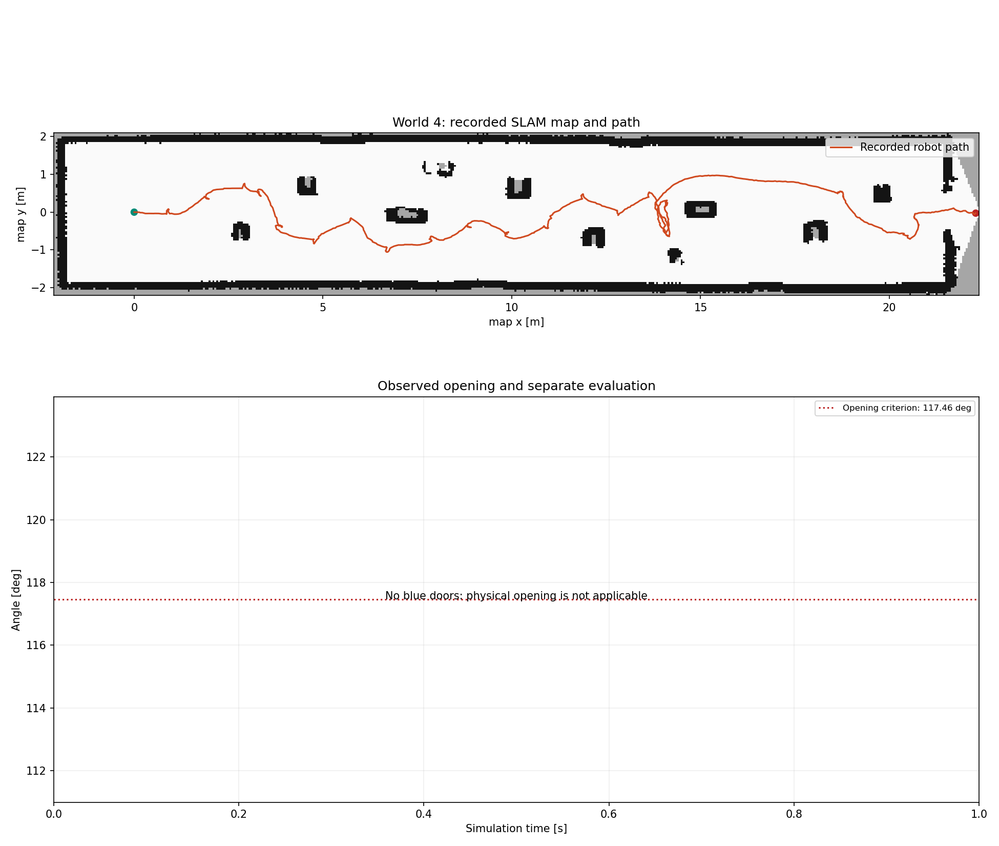
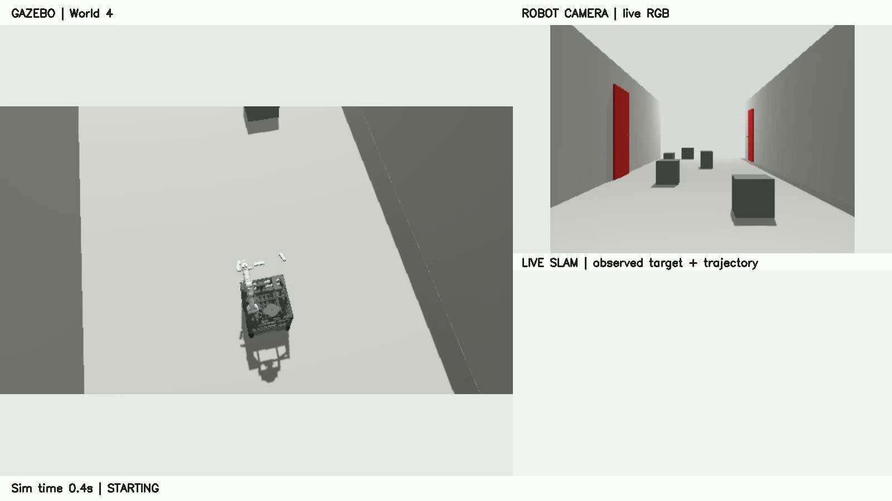
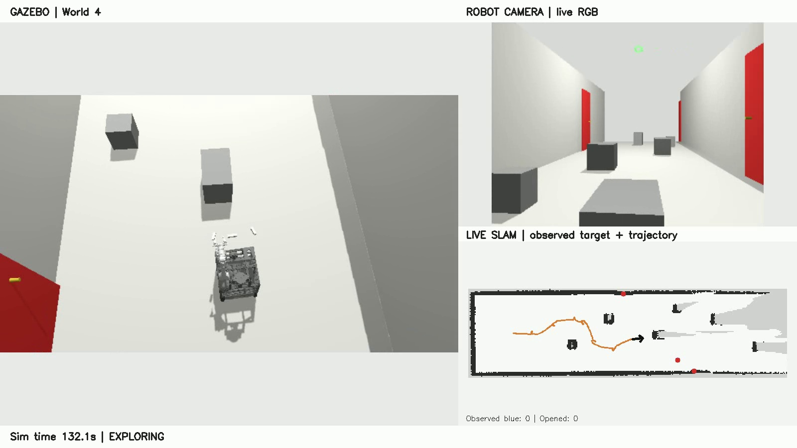
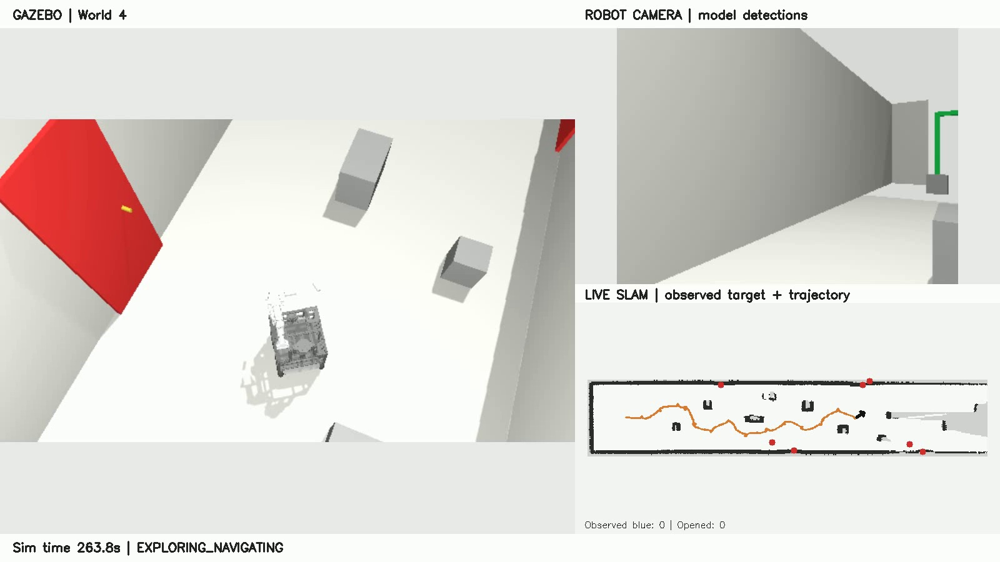
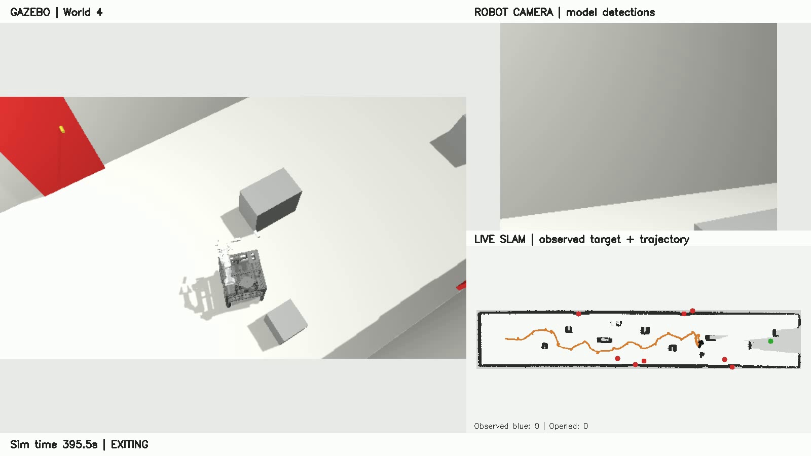
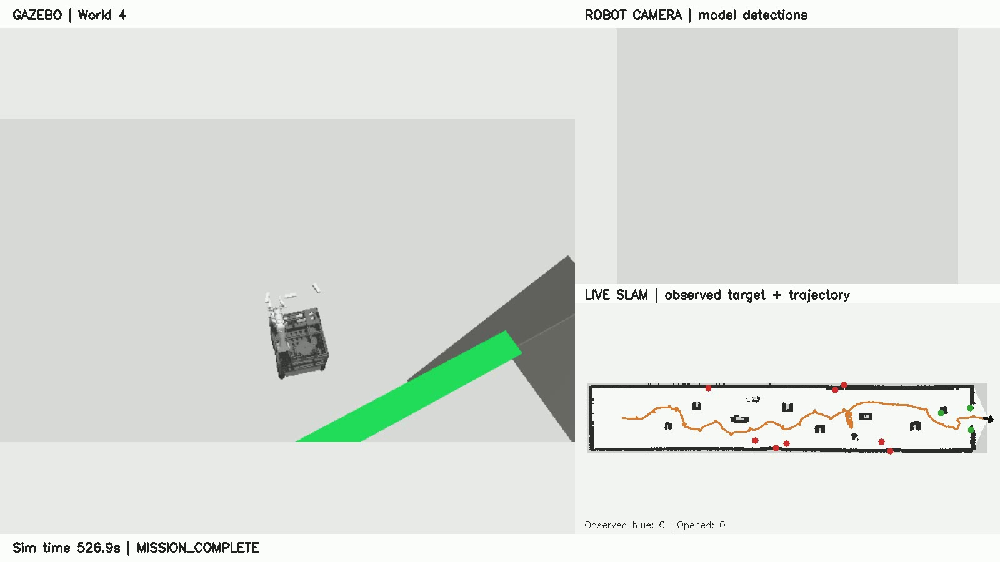

수정본 V17: 최신 카메라 문 위치와 LiDAR 벽면 방향으로 접근 목표를 계산하고, 문 기억 좌표와 주차 목표를 분리합니다. 관측 기반 우회 중 Nav2 목표 재전송을 차단합니다. 우회 제한은 전체 180초·진전 없음 60초이며 자체 odom의 새로운 이동만 진전으로 인정합니다. 월드 1·2·3·4 통합 성공, 월드 5는 첫 문 개방 후 다음 목표 접근 중 우회 정체로 안전정지했습니다. 사전 지도·문 개수·정답 좌표를 제어에 사용하지 않으며, 개방각 2.05 rad 및 접촉·해제·회수·안전 검사 기준은 유지합니다. 전체 5개 월드 통과나 실제 로봇 안전성 검증은 아닙니다.
종료 상태: MISSION_COMPLETE. 사전 지도 없이 실시간 SLAM과 로봇 센서로 제어. 문 개수·위치·시뮬레이터 문 각도는 평가에만 사용하며, 알려진 로봇 형상과 센서 보정값 및 안전 파라미터는 사용합니다.
이 문서는 이 실행의 기록만 사용합니다. 실패 장면을 성공 자료와 이어 붙이지 않았으며, 과거 월드1 성공 기록은 변경하지 않았습니다.
MP4 다운로드 · 다른 실행과 연결하지 않은 전체 기록. 실제 취득률 13.6 frames/simulation-second. 출력 30 fps는 실제 프레임 반복이며 생성 보간이 아닙니다.

| 작업 | 접촉한 문: 평가용 ID | 작업 결과 |
|---|
| full_original_spawn_scope | PASS |
| mission_complete | PASS |
| runner_pass | PASS |
| source_unchanged | PASS |
| models_unchanged | PASS |
| recorder_scripts_unchanged | PASS |
| live_slam_map_publisher | PASS |
| no_prior_map | PASS |
| wheel_odometry | PASS |
| no_control_truth_subscription | PASS |
| frozen_run_baseline | PASS |
| all_expected_still_open_at_end | PASS |
| all_distinct_physical_doors_processed | PASS |
| no_physical_revisit_after_success | PASS |
| every_success_has_open_release_clearance_stow_and_opposed_contact | PASS |
| no_recorded_chassis_door_contact | PASS |
| no_recorded_moving_door_wall_contact | PASS |
| whole_chassis_past_exit | PASS |
접촉은 표본 기록이며, 연속 힘 측정 또는 모든 팔·장애물 충돌 부재의 증거는 아닙니다. 파란 문이 없는 월드4에서는 물리 개방 항목이 적용되지 않습니다.





실행 결과 · 독립 검사 · 코드·모델 해시 · 이미지 출처
원본 녹화 보관 위치: /home/junyoung/fire_robot_ws_return_recovery_20261012/artifacts/recovery_v17_worlds12345/world4/evidence/full_mission_raw.mp4